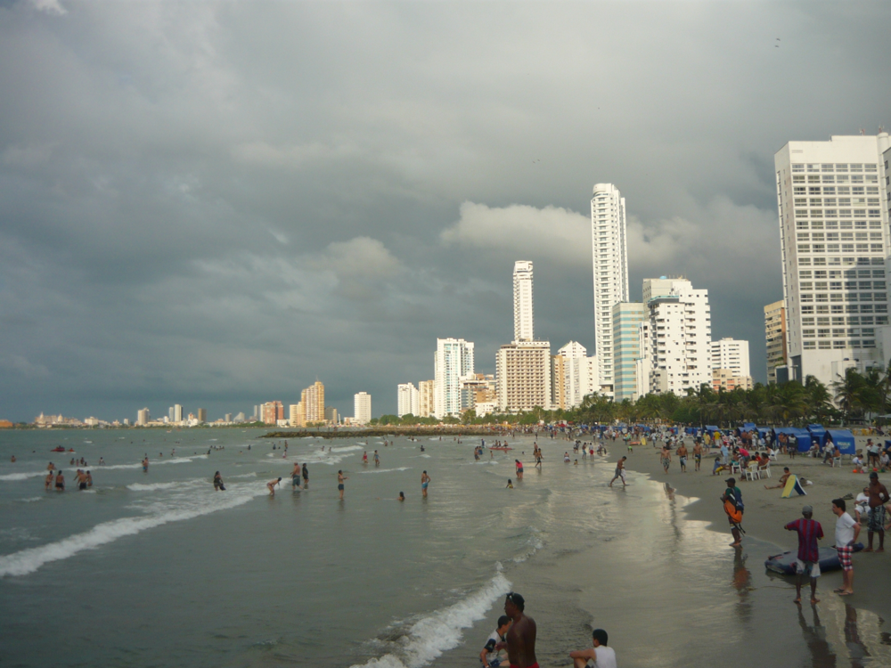
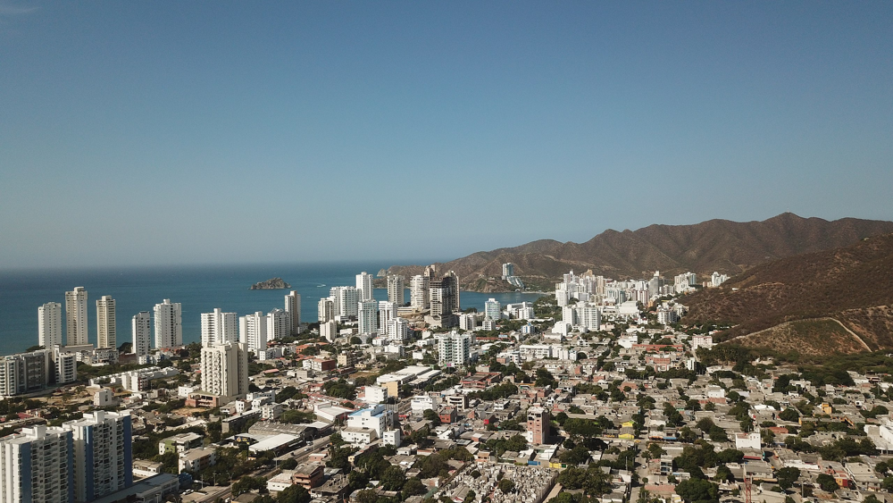

Esta comparativa ha sido preparada para evaluar las opciones de destino para una escapada romántica de 3 noches durante Semana Santa, saliendo desde Medellín o Cali, con un presupuesto máximo de $350 USD por persona (incluyendo vuelo, hotel, comida y al menos una actividad). Se han tenido en cuenta aspectos como los costos aproximados, tipo de hotel, ambiente, playas, y opciones de actividades.
Playa de Bocagrande al atardecer
Atardecer en la Bahía de Santa Marta
Cartagena es ideal si se busca una experiencia con un toque histórico, urbano y vibrante, que combine exploraciones culturales con la posibilidad de visitar islas paradisacas.
Santa Marta resulta más adecuada si se prefiere el contacto con la naturaleza, playas relajadas y un ambiente costero tranquilo, lo que permite disfrutar de actividades al aire libre sin comprometer el presupuesto.
Ambos destinos pueden ajustarse al presupuesto de ~$350 USD por persona, siempre y cuando se planifique y reserve con antelación.
Comparte este documento con Lucía para decidir cuál opción se ajusta mejor a lo que buscan para sus vacaciones de Semana Santa.
¡Felices vacaciones!
Fuente: Comparativa basada en estimaciones y opciones actuales de vuelos, hospedaje y actividades en Cartagena y Santa Marta.